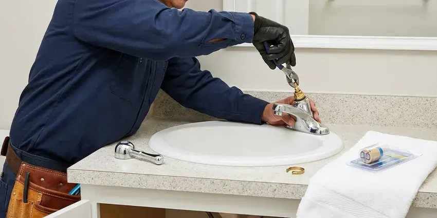
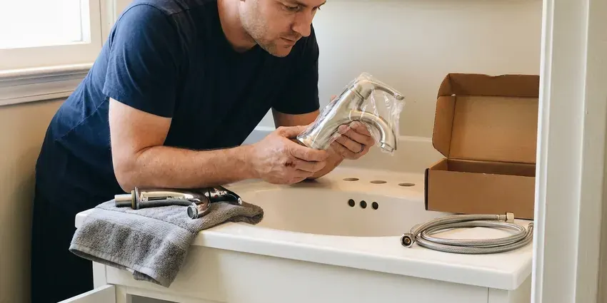
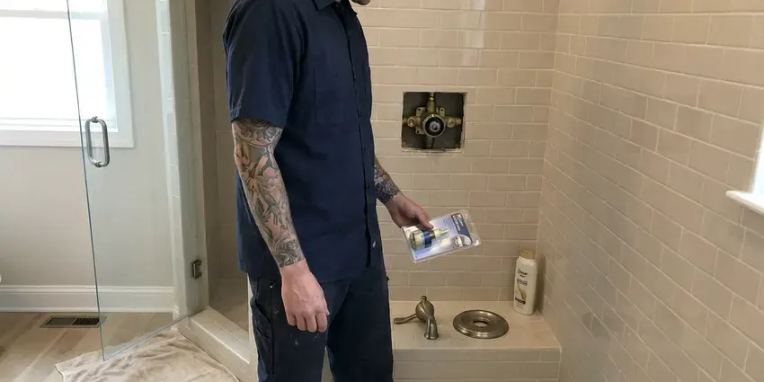
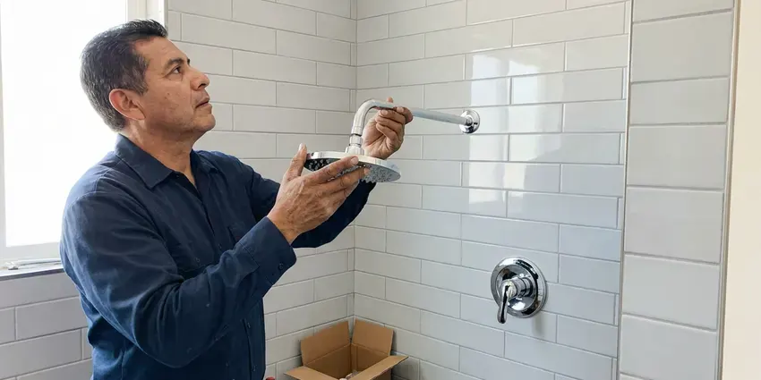

Toilet Repair in Kennewick, WA
A toilet that runs, rocks or leaks at the base in Kennewick, WA does not get better on its own. FHN Plumbing finds the failed part and replaces it on the first visit.
- Flappers and Seals On Hand
- Licensed Plumbers
- Live Phone Answering
- Dye-Tested Before We Leave

Get Your Toilet Repaired Today in Kennewick, WA
Tell us what the toilet is doing and you get a price range before we arrive.
Toilet Repair in Kennewick, WA Done Once
FHN Plumbing handles the small toilet problems that turn into big ones when they sit, like a tank bolt that weeps or a supply line with a bulge in the braid. Those are cheap parts. We replace them before they fail and flood the room.
Some of what we do:
- Stop phantom refills and constant running
- Rebuild tank-to-bowl seals and bolts
- Clear stubborn clogs with a closet auger

Additional Bathroom Plumbing Services in Kennewick, WA
From toilets to showers, our bathroom plumbing team in Kennewick, WA repairs, installs, and replaces every fixture with clean, code-compliant work.




Kennewick faucet repair specialists

Professional faucet installation, Kennewick

Shower Repair in Kennewick

Professional shower installation, Kennewick

Customers
Why Choose FHN Plumbing for Toilet Repair in Kennewick, WA?
Diagnosis comes before parts. We dye-test the tank, check the base and watch a full flush cycle before quoting, so the price covers the real problem and not just the symptom you noticed first. It keeps the job to one visit and one bill.
- Matched Parts, Brand-specific flappers fit the seat where universal ones leak.
- Accurate Diagnosis, We test the tank with dye and inspect the base before quoting.
- Upfront Pricing, You get a flat price before any work begins.
Citywide Coverage
Every route is planned so a plumber is never too far from a toilet that is actively leaking. It keeps arrival times shorter than you might expect. Routine repairs like a slow fill valve can be booked for a time that suits you, including early morning slots.
Experienced Team
The FHN Plumbing crew is licensed and background-checked, and they wear shoe covers and lay down a drop cloth before the toilet comes off the floor. They clean up after. The failed parts go in a bag so you can see them before we haul them away.
Safety-First Approach
Permits are not needed for most toilet repairs, but moving a drain or adding a toilet is a different story, and local code rules apply. We tell you which is which. When a permit applies, we file for it and book the inspection so the work is on record.
Trusted Certified Kennewick Plumbing Services Professionals
At FHN Plumbing, we are proud to offer certified plumbing services throughout Kennewick, WA. Credentials matter in this trade. Every repair, install and maintenance visit follows strict safety and quality rules, and the plumbers doing the work carry recognized industry credentials.
Call Us Now PHCC Plumbing Contractor Recognition
PHCC Plumbing Contractor Recognition Better Business Bureau (BBB) Accreditation
Better Business Bureau (BBB) Accreditation Angi Certified Pro
Angi Certified Pro ISO 9001 Quality Management Certification
ISO 9001 Quality Management CertificationWhat We Fix on Toilets in Kennewick, WA
After-Hours Toilet Repair in Kennewick, WA
Shutting off the angle stop buys you time, but an old multi-turn stop valve can crumble or leak at the stem when it has not been moved in fifteen years. Do not crank on it hard. If it will not close, the main shutoff for the house is the backup, and we can replace the stop with a quarter-turn valve once the water is off.

Cracked Tank and Supply Line Repair in Kennewick, WA
Braided supply lines last years, but the plastic nut on the toilet end can crack and a bulge in the braid means the inner hose is about to burst. Every visit includes a look at the supply line. Bulges get replaced on the spot. Old vinyl or solid plastic lines get swapped for braided stainless with metal nuts.
Commercial Toilet Repair in Kennewick
Office and retail restrooms take more flushes in a day than a house sees in a month, so the parts wear faster and fail harder. Most commercial toilets use flushometer valves instead of tanks, and those need diaphragm kits and vacuum breakers from time to time. We carry Sloan and Zurn kits. Work can be scheduled before opening or after close.
Weak Flush and Clog Repair in Kennewick, WA
Needing two flushes on a regular basis usually comes down to scale in the rim jets, a clogged siphon jet, a partial blockage in the trapway, or a flush valve that does not open all the way. A gurgle from a nearby sink or tub when you flush points to a vent problem. We clear the trap with an auger and treat the jets with a descaler. A few first-generation 1.6 gallon toilets never flushed well, and we will tell you plainly if yours is one of them.
Older Toilet Brands We Service in Kennewick, WA
Older toilets from Eljer, Briggs, Crane and Universal Rundle still turn up in homes built before the 1990s, and their flush valves often take parts nobody stocks anymore. Some can take an adapter flapper, and we carry a few kinds. For the rest, we will tell you if parts are available or if replacement is the honest answer.
Leaky Toilet Repair in Kennewick
Food coloring in the tank is the cheapest test we run. If color shows up in the bowl within fifteen minutes without a flush, water is leaking past the flapper or the flush valve seat, and the toilet is quietly refilling itself all day and night. A new flapper fixes most of these.
Fill Valve Replacement in Kennewick
Old ballcock valves with a brass arm and a big plastic float are loud and slow to refill, and they tend to stick open when scale builds up in the ports. We swap them for an adjustable fill valve from Fluidmaster or Korky and set the height so the critical level mark sits at least an inch above the overflow. It is a twenty-minute job. You will notice the difference the first night, because the tank stops hissing.

Running Toilet Repair in Kennewick
A tank that keeps hissing and refilling every few minutes is almost always losing water past the flapper or overfilling into the overflow tube. It adds up fast. We check the chain, the float height, the flapper and the seat before touching a part, then replace only what failed. Figure on thirty minutes for a typical running toilet, longer if the flush valve seat is pitted.
Nearby Toilet Repair in Kennewick, WA
A local plumber knows that a Kennewick house built in the 1960s probably has a cast iron closet bend and a brass angle stop that has not been turned in decades. It changes how carefully we handle the shutoff. There is a spare quarter-turn stop on the truck for every toilet call in case the old one fails when we close it.
Phone calls get answered by a person who asks what the toilet is doing, whether it is running, rocking, leaking at the base or backing up. Those answers tell the plumber which parts to load. Expect a clear time window. Before the truck leaves, you will already have a rough price range.
FHN Plumbing at a Glance
- Fully licensed plumbing team covering Kennewick, WA
- Same-day appointments and 24/7 emergency response
- Upfront, flat-rate pricing before work begins
- 4.9-star rated by 382+ Washington customers
Kennewick Map
Kennewick Information
- Population
- 85,158
- Area codes
- 509/206/541
- Service area
- Kennewick and communities within 40 miles
- Nearby
- Pasco, Richland, Yakima, Wenatchee
Washington has two very different climates, with long, wet and mild seasons in the west and hot, dry summers and cold winters in the east. In a Kennewick, WA bathroom, a slow leak at the toilet base can soften the subfloor and feed mold you never see.
Expert Services
Reach out to FHN Plumbing for honest, reliable plumbing from people who know the trade in Kennewick, WA.
Our Specialized Plumbing Services in Kennewick, WA
At FHN Plumbing, we handle the full list of plumbing services across Kennewick, WA. We go from leak detection all the way to full system installations, for homes and commercial buildings, and we do it quickly at a fair price. Explore our core services below:


Our Toilet Repair Routine in Kennewick, WA
Our toilet repair visits in Kennewick, WA follow the same three steps every time.
Schedule the Visit
Reach FHN Plumbing at (425) 491-3131. We ask a few questions so the right parts come along.
Find the Cause
A licensed plumber comes to your Kennewick home, tracks down the failed part and gives you a flat price.
Fix It
Once you approve, we make the repair with quality parts and a final leak check.
Frequently Asked Questions About Toilet Repair in Kennewick
Expect $120 to $250 for a simple flapper or handle job and $200 to $500 for a base reset or a clog that goes past the trap into the drain line. A broken flange adds a bit more. You get a flat price after the plumber looks at the toilet, before any work begins.
Flush only paper, and keep wipes, floss, paper towels and cotton swabs in the trash where they belong. Fix a running toilet the week it starts, because the leak wears the flush valve seat rougher over time and turns a cheap flapper job into a full flush valve replacement. Check the supply line once a year.
You can, as long as you match the size, 2 inch or 3 inch, and the flush valve seat underneath is smooth. Turn off the angle stop and flush first. Base leaks and flange repairs are a different matter, because a bad reset can rot the subfloor before you notice.
Yes. We guarantee the labor, and the parts we install carry the manufacturer warranty, which varies by brand. Should the same leak or run come back during that period, we come back and make it right at no charge.
Swapping tank parts or resetting a toilet on a new wax seal generally does not need a permit. Moving the drain or adding a new toilet usually does, and the rules come from local code, so they vary from one town to the next even within Washington. We check before starting.
Every repair FHN Plumbing does in Kennewick, WA carries a workmanship guarantee, and the parts carry their own manufacturer coverage on top of that. The terms are written on your invoice. Keep it with your house papers.
Repeat clogs usually come from wipes, toys, too much paper per flush, or an early low-flow toilet that never moved waste well. Sometimes the cause is deeper, like a sagging drain, a crushed pipe, roots in the sewer or a blocked vent that keeps the bowl from draining with full force. A camera inspection settles it quickly.
Constant running, a weak flush, water at the base and a bowl that rocks are the big four. Gurgling or whistling from the tank points to a valve problem, and a hairline crack in the porcelain should be looked at before it spreads. Do not wait on cracks.
What People Are Saying About Our Plumbing Experts?

Karen W.
After our third pinhole leak in copper, we stopped patching. FHN Plumbing gave us a written plan room by room and repiped the house in PEX while we stayed in it. The crew covered our floors every morning and cleaned up every night.
Repiping · Wenatchee, WA
Paul B.
Our pit pump ran nonstop even in dry weather. The plumber found the check valve was stuck open, so the same water kept cycling back into the pit. New valve, new float switch, done in an hour. It runs quiet now.
Sump Pump · Wenatchee, WA
Carlos V.
Our house still had galvanized pipe, and upstairs the shower was a trickle. The crew repiped everything in PEX over three days and patched every drywall hole before they left. The pressure difference is night and day.
Repiping · Kennewick, WA
Marcus H.
Grease from the fryer line kept clogging the kitchen drain at my diner. FHN Plumbing hydro jetted the line after closing, showed me the buildup on camera, and set us up on a quarterly cleaning so it does not catch us on a Friday again.
Drain Cleaning · Spokane Valley, WARobert G.
The camera showed a full break in our clay sewer line near the street. FHN Plumbing replaced it with a trenchless pipe burst, so the only digging was two small pits in the yard. They let us watch the footage before and after.
Sewer Line Replacement · Yakima, WA
Megan L.
Our upstairs tub drained so slowly that every shower turned into a bath. FHN Plumbing pulled a wad of hair out of the stopper and then snaked the line past the trap. Three months later it still drains fast.
Drain Cleaning · Pasco, WA